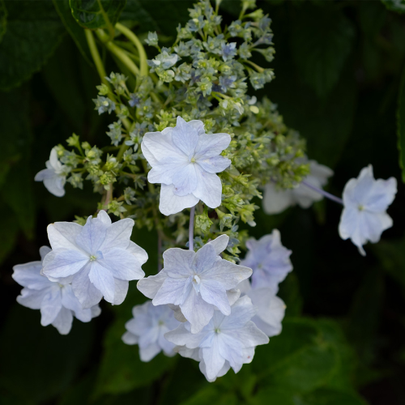

1/f変化の合間に、ちょっと寄り道。
About Gallery
2023年に中古カメラを購入し、写真を撮り始めて１年。
先日撮影したあじさいの写真を使ってギャラリーサイトを作ってみました。

道の途中でも
時には足を止めて
-
-
-

気楽に
気ままに
気の向くままに

ぽつぽつぽつ
湿った土の匂いと雨の音

ミラーレス一眼を買ってから、身近なものの魅力や息づかいを改めて感じるようになった気がします。
群衆と
わたし独り
踏みしめて
一歩一歩
At the end
雨音の「1/f（えふぶんのいち）ゆらぎ」によるヒーリング効果と、自由な撮影・写真表現を楽しむ「フォトセラピー」からヒントを得て言葉を選びました。
いい時もよくない時もありますが変わらずコツコツと。一歩一歩。ライティングや制作をやっていきます。写真ももっとうまくなりたいです。